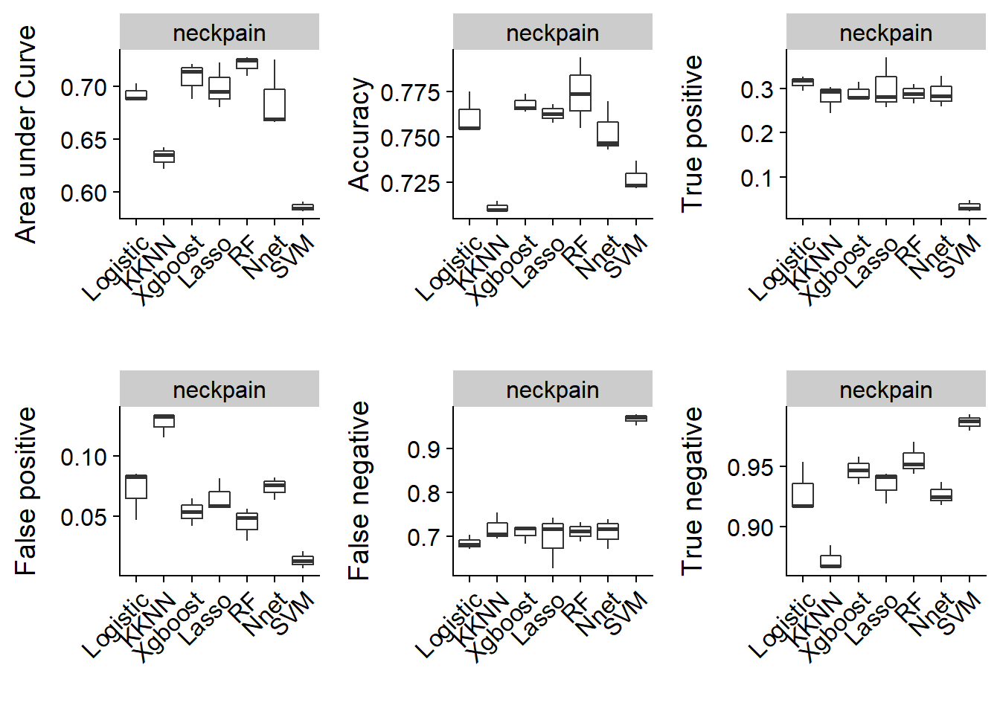
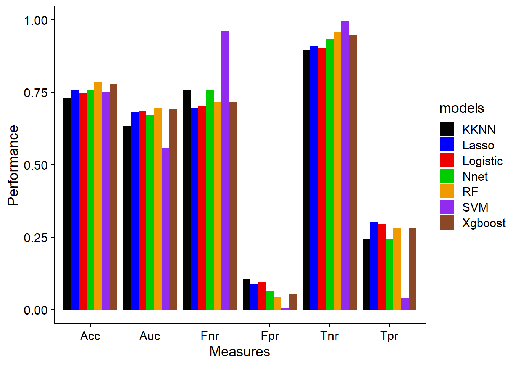
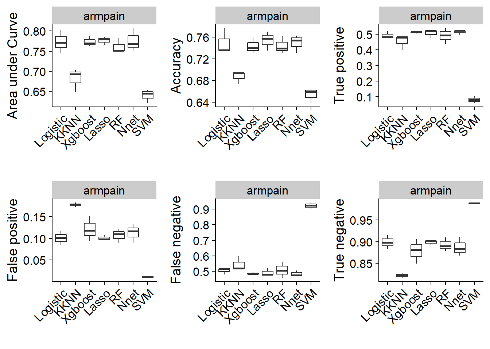
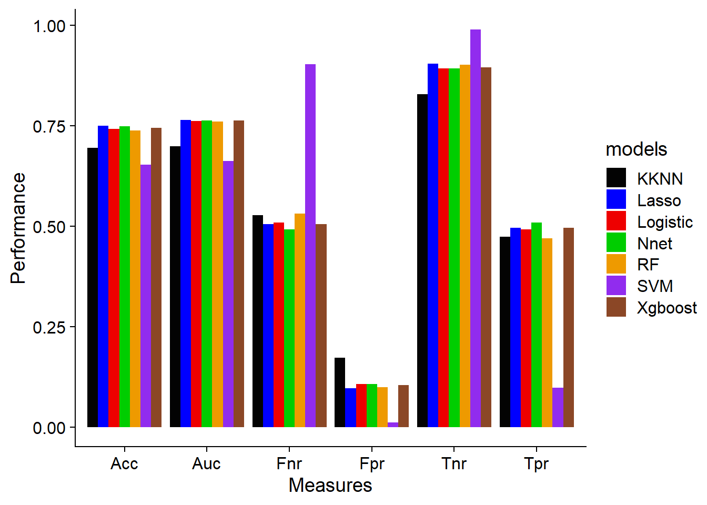
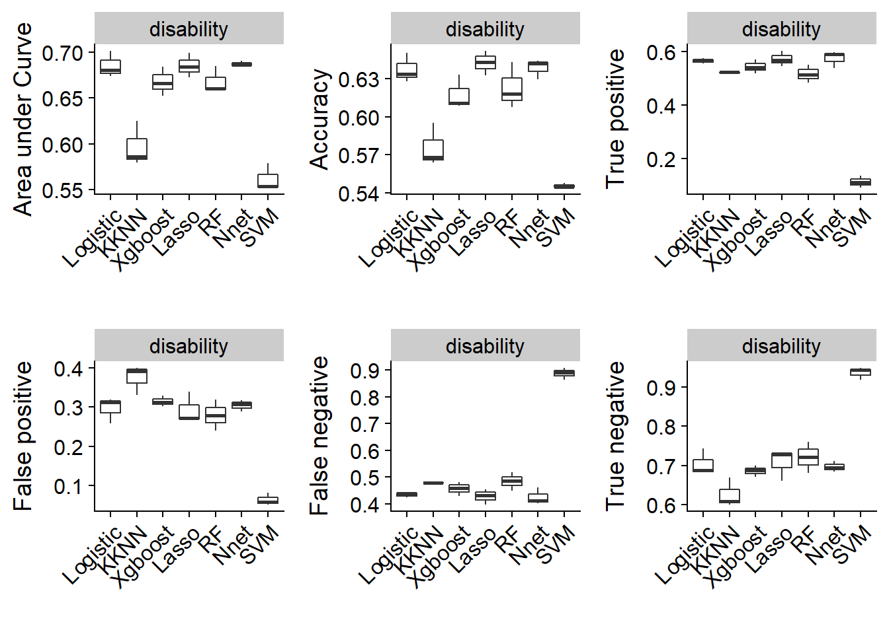
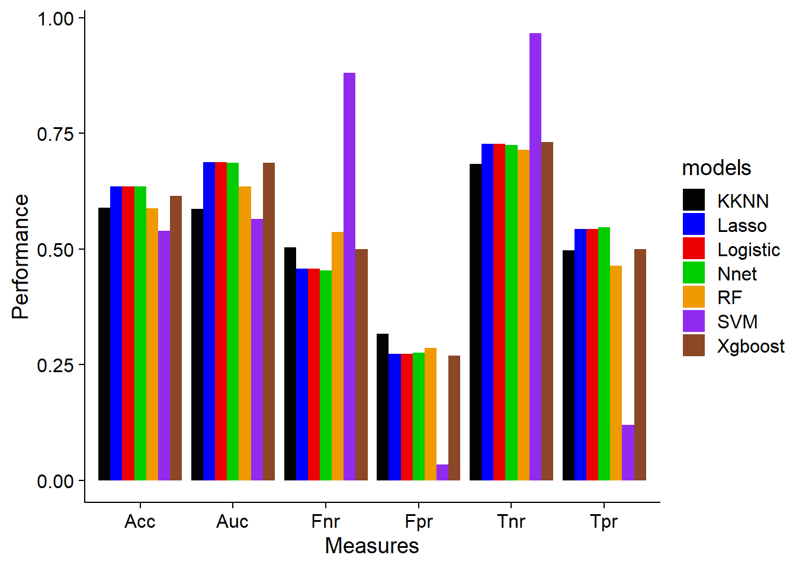

Last updated: 2021-07-02
Checks: 7 0
Knit directory: spanish_data/
This reproducible R Markdown analysis was created with workflowr (version 1.6.2). The Checks tab describes the reproducibility checks that were applied when the results were created. The Past versions tab lists the development history.
Great! Since the R Markdown file has been committed to the Git repository, you know the exact version of the code that produced these results.
Great job! The global environment was empty. Objects defined in the global environment can affect the analysis in your R Markdown file in unknown ways. For reproduciblity it’s best to always run the code in an empty environment.
The command set.seed(20210329) was run prior to running the code in the R Markdown file. Setting a seed ensures that any results that rely on randomness, e.g. subsampling or permutations, are reproducible.
Great job! Recording the operating system, R version, and package versions is critical for reproducibility.
Nice! There were no cached chunks for this analysis, so you can be confident that you successfully produced the results during this run.
Great job! Using relative paths to the files within your workflowr project makes it easier to run your code on other machines.
Great! You are using Git for version control. Tracking code development and connecting the code version to the results is critical for reproducibility.
The results in this page were generated with repository version 3ec8912. See the Past versions tab to see a history of the changes made to the R Markdown and HTML files.
Note that you need to be careful to ensure that all relevant files for the analysis have been committed to Git prior to generating the results (you can use wflow_publish or wflow_git_commit). workflowr only checks the R Markdown file, but you know if there are other scripts or data files that it depends on. Below is the status of the Git repository when the results were generated:
Ignored files:
Ignored: .Rproj.user/
Ignored: output/ap_result.RDS
Ignored: output/dis_result.RDS
Ignored: output/np_result.RDS
Ignored: output/report_files/
Note that any generated files, e.g. HTML, png, CSS, etc., are not included in this status report because it is ok for generated content to have uncommitted changes.
These are the previous versions of the repository in which changes were made to the R Markdown (analysis/5-results.Rmd) and HTML (docs/5-results.html) files. If you’ve configured a remote Git repository (see ?wflow_git_remote), click on the hyperlinks in the table below to view the files as they were in that past version.
| File | Version | Author | Date | Message |
|---|---|---|---|---|
| Rmd | 3ec8912 | Bernard | 2021-07-02 | updated models and build for publish |
| html | 3ec8912 | Bernard | 2021-07-02 | updated models and build for publish |
# Helper
library (tidyverse)Warning: package 'tidyverse' was built under R version 4.0.3-- Attaching packages --------------------------------------- tidyverse 1.3.0 --v ggplot2 3.3.3 v purrr 0.3.4
v tibble 3.0.4 v dplyr 1.0.2
v tidyr 1.1.2 v stringr 1.4.0
v readr 1.4.0 v forcats 0.5.0Warning: package 'ggplot2' was built under R version 4.0.3Warning: package 'tibble' was built under R version 4.0.3Warning: package 'tidyr' was built under R version 4.0.3Warning: package 'readr' was built under R version 4.0.3Warning: package 'purrr' was built under R version 4.0.3Warning: package 'dplyr' was built under R version 4.0.3Warning: package 'stringr' was built under R version 4.0.3Warning: package 'forcats' was built under R version 4.0.3-- Conflicts ------------------------------------------ tidyverse_conflicts() --
x dplyr::filter() masks stats::filter()
x dplyr::lag() masks stats::lag()library (cowplot)Warning: package 'cowplot' was built under R version 4.0.3# ML
library (mlr3)Warning: package 'mlr3' was built under R version 4.0.4library (mlr3learners)Warning: package 'mlr3learners' was built under R version 4.0.4library (mlr3tuning)Warning: package 'mlr3tuning' was built under R version 4.0.4Loading required package: paradoxWarning: package 'paradox' was built under R version 4.0.4library (mlr3viz)Warning: package 'mlr3viz' was built under R version 4.0.4library (mlr3fselect)Warning: package 'mlr3fselect' was built under R version 4.0.4library (mlr3pipelines)Warning: package 'mlr3pipelines' was built under R version 4.0.4library (mlr3hyperband)Warning: package 'mlr3hyperband' was built under R version 4.0.5dat <- readRDS("output/df.RDS")
# Neck pain
train <- dat$df_list$np$train_imp
test <- dat$df_list$np$test_imp
comb <- bind_rows(train, test)
train_id <- 1: nrow (train)
test_id <- (nrow (train) + 1): nrow (comb)
# Set training task
task_np <- TaskClassif$new (id = "neckpain", backend = comb, target = "outcome")
task_np$set_col_roles("ID", roles = "name")
# Arm pain
train <- dat$df_list$ap$train_imp
test <- dat$df_list$ap$test_imp
comb <- bind_rows(train, test)
train_id <- 1: nrow (train)
test_id <- (nrow (train) + 1): nrow (comb)
# Set training task
task_ap <- TaskClassif$new (id = "armpain", backend = comb, target = "outcome")
task_ap$set_col_roles("ID", roles = "name")
# NDI
train <- dat$df_list$dis$train_imp
test <- dat$df_list$dis$test_imp
comb <- bind_rows(train, test)
train_id <- 1: nrow (train)
test_id <- (nrow (train) + 1): nrow (comb)
# Set training task
task_dis <- TaskClassif$new (id = "disability", backend = comb, target = "outcome")
task_dis$set_col_roles("ID", roles = "name")
measures <- list (msr("classif.auc"),
msr("classif.acc"),
msr("classif.tpr"),
msr("classif.fpr"),
msr("classif.fnr"),
msr("classif.tnr"))m_list <- readRDS("output/np_result.RDS")
bmr1 <- as_benchmark_result(m_list$rsmp_list$rr_logreg)
bmr2 <- as_benchmark_result(m_list$rsmp_list$rr_kknn)
bmr3 <- as_benchmark_result(m_list$rsmp_list$rr_xgb)
bmr4 <- as_benchmark_result(m_list$rsmp_list$rr_lasso)
bmr5 <- as_benchmark_result(m_list$rsmp_list$rr_rf)
bmr6 <- as_benchmark_result(m_list$rsmp_list$rr_net)
bmr7 <- as_benchmark_result(m_list$rsmp_list$rr_svm)
bmr1$
combine(bmr2)$
combine (bmr3)$
combine (bmr4)$
combine (bmr5)$
combine (bmr6)$
combine (bmr7)
bmr1<BenchmarkResult> of 21 rows with 7 resampling runs
nr task_id learner_id resampling_id iters warnings errors
1 neckpain scale.log.fselector cv 3 0 0
2 neckpain scale.encode.kknn.tuned cv 3 0 0
3 neckpain scale.encode.xgb.tuned cv 3 0 0
4 neckpain scale.encode.lasso.tuned cv 3 0 0
5 neckpain scale.encode.rf.tuned cv 3 0 0
6 neckpain scale.encode.nnet.tuned cv 3 0 0
7 neckpain scale.encode.svm.tuned cv 3 0 0ynames <- c("Area under Curve", "Accuracy", "True positive",
"False positive", "False negative", "True negative")
mod_names <- c("Logistic","KKNN","Xgboost", "Lasso", "RF", "Nnet", "SVM")
plot_list <- vector ("list", length (measures))
for (n in seq_along(measures)) {
plot_list[[n]] <- autoplot(bmr1, measure = measures[[n]]) +
theme_cowplot() +
scale_x_discrete(labels = mod_names) +
ggplot2::theme(axis.text.x = ggplot2::element_text(angle = 45, hjust = 1)) +
ylab (ynames[n])
} Scale for 'x' is already present. Adding another scale for 'x', which will
replace the existing scale.
Scale for 'x' is already present. Adding another scale for 'x', which will
replace the existing scale.
Scale for 'x' is already present. Adding another scale for 'x', which will
replace the existing scale.
Scale for 'x' is already present. Adding another scale for 'x', which will
replace the existing scale.
Scale for 'x' is already present. Adding another scale for 'x', which will
replace the existing scale.
Scale for 'x' is already present. Adding another scale for 'x', which will
replace the existing scale.plot_grid(
plotlist = plot_list,
align="hv"
)
pred_list <- vector ("list", length (m_list$model_list))
for (n in seq_along(m_list$model_list)) {
m <- m_list$model_list[[n]]
p <- m$predict(task_np, row_ids = test_id)
pred_list[[n]] <- p$score (measures)
} Warning: package 'kknn' was built under R version 4.0.5names(pred_list) <- mod_names
pred <- pred_list %>%
bind_rows(.id = "models")
names (pred)[-1] <- c("Auc", "Acc", "Tpr",
"Fpr", "Fnr", "Tnr")pred_plot <- pred %>%
pivot_longer(cols = -models,
names_to = "Measures",
values_to = "Performance") %>%
ggplot() +
geom_bar(aes (x = Measures, y = Performance, fill = models),
position = "dodge", stat = "identity") +
scale_fill_manual(values = c("#030303", "#0000FF", "#EE0000", "#00CD00", "#EE9A00", "#912CEE", "#8B4726")) +
theme_cowplot()
pred_plot
m_list <- readRDS("output/ap_result.RDS")
bmr1 <- as_benchmark_result(m_list$rsmp_list$rr_logreg)
bmr2 <- as_benchmark_result(m_list$rsmp_list$rr_kknn)
bmr3 <- as_benchmark_result(m_list$rsmp_list$rr_xgb)
bmr4 <- as_benchmark_result(m_list$rsmp_list$rr_lasso)
bmr5 <- as_benchmark_result(m_list$rsmp_list$rr_rf)
bmr6 <- as_benchmark_result(m_list$rsmp_list$rr_net)
bmr7 <- as_benchmark_result(m_list$rsmp_list$rr_svm)
bmr1$
combine(bmr2)$
combine (bmr3)$
combine (bmr4)$
combine (bmr5)$
combine (bmr6)$
combine (bmr7)
bmr1<BenchmarkResult> of 21 rows with 7 resampling runs
nr task_id learner_id resampling_id iters warnings errors
1 armpain scale.log.fselector cv 3 0 0
2 armpain scale.encode.kknn.tuned cv 3 0 0
3 armpain scale.encode.xgb.tuned cv 3 0 0
4 armpain scale.encode.lasso.tuned cv 3 0 0
5 armpain scale.encode.rf.tuned cv 3 0 0
6 armpain scale.encode.nnet.tuned cv 3 0 0
7 armpain scale.encode.svm.tuned cv 3 0 0ynames <- c("Area under Curve", "Accuracy", "True positive",
"False positive", "False negative", "True negative")
mod_names <- c("Logistic","KKNN","Xgboost", "Lasso", "RF", "Nnet", "SVM")
plot_list <- vector ("list", length (measures))
for (n in seq_along(measures)) {
plot_list[[n]] <- autoplot(bmr1, measure = measures[[n]]) +
theme_cowplot() +
scale_x_discrete(labels = mod_names) +
ggplot2::theme(axis.text.x = ggplot2::element_text(angle = 45, hjust = 1)) +
ylab (ynames[n])
} Scale for 'x' is already present. Adding another scale for 'x', which will
replace the existing scale.
Scale for 'x' is already present. Adding another scale for 'x', which will
replace the existing scale.
Scale for 'x' is already present. Adding another scale for 'x', which will
replace the existing scale.
Scale for 'x' is already present. Adding another scale for 'x', which will
replace the existing scale.
Scale for 'x' is already present. Adding another scale for 'x', which will
replace the existing scale.
Scale for 'x' is already present. Adding another scale for 'x', which will
replace the existing scale.plot_grid(
plotlist = plot_list,
align="hv"
)
pred_list <- vector ("list", length (m_list$model_list))
for (n in seq_along(m_list$model_list)) {
m <- m_list$model_list[[n]]
p <- m$predict(task_ap, row_ids = test_id)
pred_list[[n]] <- p$score (measures)
} Warning in predict.lm(object, newdata, se.fit, scale = 1, type = if (type == :
prediction from a rank-deficient fit may be misleadingWarning: package 'kknn' was built under R version 4.0.5names(pred_list) <- mod_names
pred <- pred_list %>%
bind_rows(.id = "models")
names (pred)[-1] <- c("Auc", "Acc", "Tpr",
"Fpr", "Fnr", "Tnr")pred_plot <- pred %>%
pivot_longer(cols = -models,
names_to = "Measures",
values_to = "Performance") %>%
ggplot() +
geom_bar(aes (x = Measures, y = Performance, fill = models),
position = "dodge", stat = "identity") +
scale_fill_manual(values = c("#030303", "#0000FF", "#EE0000", "#00CD00", "#EE9A00", "#912CEE", "#8B4726")) +
theme_cowplot()
pred_plot
m_list <- readRDS("output/dis_result.RDS")
bmr1 <- as_benchmark_result(m_list$rsmp_list$rr_logreg)
bmr2 <- as_benchmark_result(m_list$rsmp_list$rr_kknn)
bmr3 <- as_benchmark_result(m_list$rsmp_list$rr_xgb)
bmr4 <- as_benchmark_result(m_list$rsmp_list$rr_lasso)
bmr5 <- as_benchmark_result(m_list$rsmp_list$rr_rf)
bmr6 <- as_benchmark_result(m_list$rsmp_list$rr_net)
bmr7 <- as_benchmark_result(m_list$rsmp_list$rr_svm)
bmr1$
combine(bmr2)$
combine (bmr3)$
combine (bmr4)$
combine (bmr5)$
combine (bmr6)$
combine (bmr7)
bmr1<BenchmarkResult> of 21 rows with 7 resampling runs
nr task_id learner_id resampling_id iters warnings errors
1 disability scale.log.fselector cv 3 0 0
2 disability scale.encode.kknn.tuned cv 3 0 0
3 disability scale.encode.xgb.tuned cv 3 0 0
4 disability scale.encode.lasso.tuned cv 3 0 0
5 disability scale.encode.rf.tuned cv 3 0 0
6 disability scale.encode.nnet.tuned cv 3 0 0
7 disability scale.encode.svm.tuned cv 3 0 0ynames <- c("Area under Curve", "Accuracy", "True positive",
"False positive", "False negative", "True negative")
mod_names <- c("Logistic","KKNN","Xgboost", "Lasso", "RF", "Nnet", "SVM")
plot_list <- vector ("list", length (measures))
for (n in seq_along(measures)) {
plot_list[[n]] <- autoplot(bmr1, measure = measures[[n]]) +
theme_cowplot() +
scale_x_discrete(labels = mod_names) +
ggplot2::theme(axis.text.x = ggplot2::element_text(angle = 45, hjust = 1)) +
ylab (ynames[n])
} Scale for 'x' is already present. Adding another scale for 'x', which will
replace the existing scale.
Scale for 'x' is already present. Adding another scale for 'x', which will
replace the existing scale.
Scale for 'x' is already present. Adding another scale for 'x', which will
replace the existing scale.
Scale for 'x' is already present. Adding another scale for 'x', which will
replace the existing scale.
Scale for 'x' is already present. Adding another scale for 'x', which will
replace the existing scale.
Scale for 'x' is already present. Adding another scale for 'x', which will
replace the existing scale.plot_grid(
plotlist = plot_list,
align="hv"
)
pred_list <- vector ("list", length (m_list$model_list))
for (n in seq_along(m_list$model_list)) {
m <- m_list$model_list[[n]]
p <- m$predict(task_dis, row_ids = test_id)
pred_list[[n]] <- p$score (measures)
} Warning in predict.lm(object, newdata, se.fit, scale = 1, type = if (type == :
prediction from a rank-deficient fit may be misleadingWarning: package 'kknn' was built under R version 4.0.5names(pred_list) <- mod_names
pred <- pred_list %>%
bind_rows(.id = "models")
names (pred)[-1] <- c("Auc", "Acc", "Tpr",
"Fpr", "Fnr", "Tnr")pred_plot <- pred %>%
pivot_longer(cols = -models,
names_to = "Measures",
values_to = "Performance") %>%
ggplot() +
geom_bar(aes (x = Measures, y = Performance, fill = models),
position = "dodge", stat = "identity") +
scale_fill_manual(values = c("#030303", "#0000FF", "#EE0000", "#00CD00", "#EE9A00", "#912CEE", "#8B4726")) +
theme_cowplot()
pred_plot
sessionInfo()R version 4.0.2 (2020-06-22)
Platform: x86_64-w64-mingw32/x64 (64-bit)
Running under: Windows 10 x64 (build 19041)
Matrix products: default
locale:
[1] LC_COLLATE=English_United Kingdom.1252
[2] LC_CTYPE=English_United Kingdom.1252
[3] LC_MONETARY=English_United Kingdom.1252
[4] LC_NUMERIC=C
[5] LC_TIME=English_United Kingdom.1252
attached base packages:
[1] stats graphics grDevices utils datasets methods base
other attached packages:
[1] mlr3hyperband_0.1.2 mlr3pipelines_0.3.4 mlr3fselect_0.5.1
[4] mlr3viz_0.5.3 mlr3tuning_0.8.0 paradox_0.7.1
[7] mlr3learners_0.4.5 mlr3_0.11.0 cowplot_1.1.1
[10] forcats_0.5.0 stringr_1.4.0 dplyr_1.0.2
[13] purrr_0.3.4 readr_1.4.0 tidyr_1.1.2
[16] tibble_3.0.4 ggplot2_3.3.3 tidyverse_1.3.0
[19] workflowr_1.6.2
loaded via a namespace (and not attached):
[1] fs_1.5.0 lubridate_1.7.9.2 bbotk_0.3.2
[4] httr_1.4.2 rprojroot_2.0.2 tools_4.0.2
[7] backports_1.2.1 R6_2.5.0 DBI_1.1.0
[10] mlr3measures_0.3.1 colorspace_2.0-0 nnet_7.3-14
[13] withr_2.3.0 mlr3misc_0.8.0 tidyselect_1.1.0
[16] compiler_4.0.2 git2r_0.27.1 glmnet_4.0-2
[19] cli_2.2.0 rvest_0.3.6 lgr_0.4.2
[22] xml2_1.3.2 labeling_0.4.2 scales_1.1.1
[25] checkmate_2.0.0 palmerpenguins_0.1.0 digest_0.6.27
[28] rmarkdown_2.6 pkgconfig_2.0.3 htmltools_0.5.0
[31] parallelly_1.24.0 dbplyr_2.0.0 rlang_0.4.10
[34] readxl_1.3.1 rstudioapi_0.13 shape_1.4.5
[37] generics_0.1.0 farver_2.0.3 jsonlite_1.7.2
[40] magrittr_2.0.1 Matrix_1.2-18 Rcpp_1.0.6
[43] munsell_0.5.0 fansi_0.4.1 lifecycle_0.2.0
[46] stringi_1.5.3 whisker_0.4 yaml_2.2.1
[49] grid_4.0.2 parallel_4.0.2 promises_1.1.1
[52] crayon_1.3.4 lattice_0.20-41 splines_4.0.2
[55] haven_2.3.1 hms_0.5.3 knitr_1.30
[58] ps_1.5.0 pillar_1.4.7 ranger_0.12.1
[61] igraph_1.2.6 uuid_0.1-4 xgboost_1.3.1.1
[64] codetools_0.2-18 reprex_0.3.0 glue_1.4.2
[67] evaluate_0.14 data.table_1.14.0 modelr_0.1.8
[70] foreach_1.5.1 vctrs_0.3.6 httpuv_1.5.4
[73] cellranger_1.1.0 gtable_0.3.0 assertthat_0.2.1
[76] xfun_0.20 broom_0.7.4.9000 e1071_1.7-4
[79] later_1.1.0.1 class_7.3-17 survival_3.2-7
[82] iterators_1.0.13 kknn_1.3.1 ellipsis_0.3.1